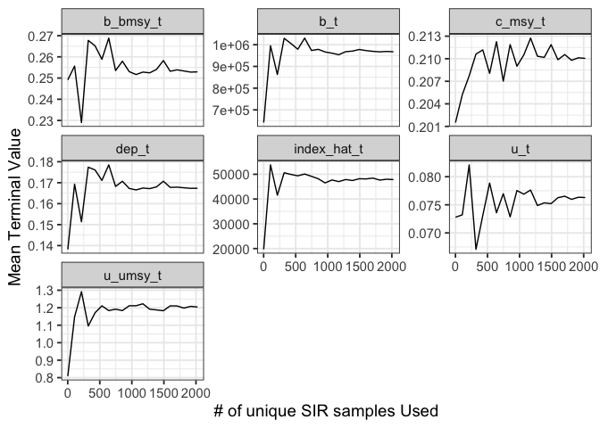

sraplus is a flexible assessment package based developed in Ovando et al. 2021 At the most “data limited” end, the model approximates the behavior of catch-msy, sampling from prior distributions to obtain parameter values that given a catch history do not crash the population and satisfy supplied priors on initial and final depletion. At the most data rich end the model can be fit to an abundance index or catch-per-unit-effort data, while incorporating priors on recent stock status based on Fisheries Management Index (FMI) scores or swept-area ratio data.
Installing
This is an in-development package hosted on GitHub, so you will need to do a few things to install it.
open R
If you don’t have the
devtoolspackage installed yet, run
install.packages("devtools")You’ll need to be connected to the internet.
- Once
devtoolshas been installed, you can then installsraplusby running
remotes::install_github("danovando/sraplus")That’s probably going to ask you to install many other packages, agree to the prompts.
Troubleshooting
Make sure you try the install with a fresh R session (go to “Session>Restart R” to make sure)
If you run into an error, first off try updating your R packages. From there….
If your version of R is lower than 3.5, you might want to consider updating R itself. Updating from 3.51 to 3.52 shouldn’t be any hassle. BIG WARNING THOUGH, updating from say R 3.1 to 3.5 is a major update, and you’ll lose all your installed packages in the process. I recommend following the instructions here to deal with that, but even with that fix it can take a while, so I don’t recommend doing a major R update if you’re on a deadline. There are also packages to help you with this process, specifically installR for Windows and updateR for Mac.
From there…
- On Windows, make sure you have the appropriate version of Rtools installed (here), most likely Rtools35 if you have R version 3.3 or higher
- Make sure that you select the box that says something about adding Rtools to the PATH variable
- On macOS, there might be some issues with the your compiler. If you get an error that says something like
clang: error: unsupported option '-fopenmp', follow the instructions here
Once you’ve tried those, restart your computer and try running
install.packages("devtools")
remotes::install_github("danovando/sraplus")Example Use
First, load libraries. These are the core libraries needed to run sraplus, all of which should have been installed for you if you didn’t already have them when you installed sraplus.
library(ggplot2)
library(tidyr)
library(dplyr)
library(sraplus)
library(tmbstan)
Sys.unsetenv("PKG_CXXFLAGS")Once you’ve successfully installed sraplus you can take for a test drive with these examples. We’ll now work through a couple examples, from simple to complex, of using sraplus
“Catch-only” SIR model
For the first example we’ll use a sampling-importance-resampling (SIR) algorithm with a “catch-only” version of the model. In this mode, we use catch heuristics (in the manner of the @anderson2014 adaptation of Catch-MSY). The catch-heuristics are if catch in the first year is less than 70% of the maximum reported catch, we set an expectation of depletion in the initial year of 70% of carrying capacity. Otherwise, the expectation is 40% of carrying capacity. For final depletion, the heuristic prior is if catch in the final year is greater than 50% of maximum catch final depletion is assumed to be 60% of carrying capacity, otherwise 40% of carrying capacity.
The first step in running sraplus is the sraplus::format_driors (data and priors) function. In this case, we will use example data for Atlantic cod (Gadus morhua) that is included in the sraplus package.
example_taxa <- "gadus morhua"
data(cod)
head(cod)
#> # A tibble: 6 × 56
#> stockid scientificname commonname year catch stocklong.x TBmsybest ERmsybest
#> <chr> <chr> <chr> <int> <dbl> <chr> <dbl> <dbl>
#> 1 CODIII… Gadus morhua Atlantic … 1963 118000 Atlantic c… 971321. 0.455
#> 2 CODIII… Gadus morhua Atlantic … 1964 144000 Atlantic c… 971321. 0.455
#> 3 CODIII… Gadus morhua Atlantic … 1965 198000 Atlantic c… 971321. 0.455
#> 4 CODIII… Gadus morhua Atlantic … 1966 241000 Atlantic c… 971321. 0.455
#> 5 CODIII… Gadus morhua Atlantic … 1967 287000 Atlantic c… 971321. 0.455
#> 6 CODIII… Gadus morhua Atlantic … 1968 292000 Atlantic c… 971321. 0.455
#> # … with 48 more variables: MSYbest <dbl>, TBmgtbest <dbl>, ERmgtbest <dbl>,
#> # TBmsy <dbl>, SSBmsy <dbl>, Nmsy <dbl>, MSY <dbl>, Fmsy <dbl>, ERmsy <dbl>,
#> # TBmgt <dbl>, SSBmgt <dbl>, Fmgt <dbl>, ERmgt <dbl>, TB0 <dbl>, SSB0 <dbl>,
#> # M <dbl>, TBlim <dbl>, SSBlim <dbl>, Flim <dbl>, ERlim <dbl>,
#> # b_v_bmsy <dbl>, u_v_umsy <dbl>, exploitation_rate <dbl>, effort <dbl>,
#> # total_biomass <dbl>, ss_biomass <dbl>, tsn <chr>, areaid <chr>,
#> # stocklong.y <chr>, region <chr>, primary_country <chr>, …From there, we’ll pass the catch data, and the years corresponding to the catch data, to format_driors, and tell the model to use catch-msy style heuristics by setting use_hueristics = TRUE. You’ll note that sraplus prints a warning use_hueristics = TRUE reminding you that any estimates of stock status are simply a transformation of your prior beliefs expressed through the catch heuristics.
catch_only_driors <- format_driors(
taxa = example_taxa,
catch = cod$catch,
years = cod$year,
use_heuristics = TRUE
)You can take a look at the information in the catch_only_driors object by using sraplus::plot_driors
plot_driors(catch_only_driors)
From there, we pass the driors object to sraplus::fit_sraplus, and plot the results using sraplus::plot_sraplus. The engine argument specifies how the model will be fit. When not actually “fitting” to anything (rather simply sampling from priors that don’t crash the population), we recommend setting engine to “sir”. The draws argument tells sraplus how many draws from the SIR algorithm to generate, and n_keep how many draws to sample from the total draws iterations. So in this case the SIR algorithm will run 1 million iterations, and sample 2000 entries from those million in proportion to their likelihood.
sfs <- purrr::safely(fit_sraplus)
catch_only_fit <- fit_sraplus(driors = catch_only_driors,
engine = "sir",
draws = 1e5,
n_keep = 4000,
estimate_proc_error = TRUE,
estimate_shape = TRUE,
max_time = Inf,
tune_prior_predictive = FALSE)
sraplus::plot_sraplus(catch_only = catch_only_fit, years = catch_only_driors$years)
Running fit_sraplus always produces a list with two objects: results and fit. results is (mostly) standardized across engines set of summary outputs from the fitted model. This allows us to easily plot and compare outputs from models fit using sir, TMB, or stan. The fit object contains the actual fitted model, which will of course vary dramatically depending on what engine was used.
Let’s take a quick look at the results object.
head(catch_only_fit$results)
#> # A tibble: 6 × 6
#> year variable mean sd lower upper
#> <dbl> <chr> <dbl> <dbl> <dbl> <dbl>
#> 1 1963 b_div_bmsy 0.620 0.0887 0.505 0.747
#> 2 1963 b 4675690. 3264646. 2174014. 10550101.
#> 3 1963 c_div_msy 0.304 0.107 0.107 0.441
#> 4 1963 crashed 0 0 0 0
#> 5 1963 depletion 0.408 0.0431 0.343 0.491
#> 6 1963 index_hat_t 244423. 225457. 30486. 559945.results is organized as a dataframe tracking different variables over years. mean is the mean value for a given variable, sd the estimated standard deviation around the mean, and lower and upper being the 10th and 90th percentiles of the estimates.
You can access other variables from the raw fit object, though this is not standardized by engine and so requires knowing how to for example get outputs out of stanfit objects. In the catch_only_fit, the fit object is the output of the SIR algorithm.
head(catch_only_fit$fit)
#> variable year draw value draw_id
#> 1 b_t 1963 1 5859097 53753
#> 2 b_t 1964 1 4931092 53753
#> 3 b_t 1965 1 5246869 53753
#> 4 b_t 1966 1 5690475 53753
#> 5 b_t 1967 1 5499910 53753
#> 6 b_t 1968 1 5945906 53753From there, we can generate some standard plots of B/Bmsy (b_div_bmsy), Catch/MSY, U/Umsy, and depletion over time using plot_sraplus.
sraplus::plot_sraplus(catch_only = catch_only_fit, years = catch_only_driors$years)Fisheries Management Index and Swept Area Ratio
Now suppose that we obtain some FMI and SAR data for this fishery. We can use these values to provide updated priors on current fishing mortality rates and stock status (see full report for details on how this is accomplished). Note that the FMI and SAR values year are entirely fictional and any resemblance to any real fishery is purely coincidental!
You’ll notice that we now add a few more options to format_driors. We’ll manually set priors on initial depletion, with a prior of initial biomass equal to carrying capacity (initial_state = 1), with a standard deviation of 0.2. We’ll explicitly tell the model not to use catch heuristics (though you don’t always need to specify this, FALSE is the default). We’ll then pass the driors a swept area ratio of 2 (sar = 2), and a named vector of FMI scores (where FMI scores range from 0 to 1). Note that FMI scores should be obtained through the formal FMI survey process and not made up on the spot. W
fmi_sar_driors <- format_driors(
taxa = example_taxa,
catch = cod$catch,
years = cod$year,
initial_state = 1,
initial_state_cv = 0.25,
use_heuristics = FALSE,
sar = 10,
fmi = c("research" = 0.5, "management" = 0.5, "socioeconomics" = 0.5, 'enforcement' = 0.5),
sar_cv = NA,
use_b_reg = FALSE,
b_ref_type = "k")
# fmi_sar_driors <- format_driors(
# taxa = example_taxa,
# catch = cod$catch,
# years = cod$year,
# use_heuristics = FALSE,
# initial_state = NA,
# initial_state_cv = NA,
# b_ref_type = "k",
# use_catch_prior = TRUE
# )
#
sraplus::plot_driors(fmi_sar_driors)We’ll then fit and plot our model. Note that you can pass multiple sraplus fits, and can name each run whatever you would like.
fmi_sar_fit <- fit_sraplus(
driors = fmi_sar_driors,
engine = "sir",
draws = 1e6,
n_keep = 4000,
estimate_shape = TRUE,
estimate_proc_error = TRUE
)
plot_sraplus(fmi_sar = fmi_sar_fit,
catch_only = catch_only_fit,
years = fmi_sar_driors$years)
You can also use the function sraplus::diagnose_sraplus to look at some brief diagnostics of the model fit. Note that these diagnostics are not exhaustive, and users should carefully assess the quality of any model fits on their own as well. diagnose_sraplus will inform the user whether FishLife found an exact match for the species, and provide some summary diagnostics for each model type (SIR, TMB, or Stan). For the SIR case, the diagnostics include the number of unique samples in the posterior, and a plot of the mean terminal values as a function of the number of unique samples used. n
sraplus::diagnose_sraplus(fit = fmi_sar_fit, driors = fmi_sar_driors )
#> $fishlife_match
#> [1] "fishlife matched supplied species"
#>
#> $distinct_sir_draws
#> [1] 2044
#>
#> $sir_convergence_plot
Abundance Index via Maximum Likelihood
We’ll now try adding in some actual data to fit to. For illustration purposes (and since we’re no longer using FMI/SAR data which can’t really be simulated), we’ll use a simulated fishery. Let’s start with a very simple example,using a simple fishery simulator built into sraplus.
set.seed(42)
sim <-
sraplus_simulator(
sigma_proc = 0.05,
sigma_u = 0,
q_slope = 0,
r = 0.4,
years = 25,
q = 1e-3,
m = 1.01,
init_u_umsy = 1
)
sim$pop %>%
select(year, depletion,catch, effort,u) %>%
gather(metric, value, -year) %>%
ggplot(aes(year, value)) +
geom_point() +
facet_wrap(~metric, scales = "free_y") +
labs(y = "Value", x = "Year") +
sraplus::theme_sraplus()Now, let’s pretend that we have a perfect index of abundance, which is just biomass * 1e-3. We pass indices to srplus inside format_driors as index and index_years, where index_years is a vector of the same length of index specifying which years index data are available. Well now use Template Model Builder (TMB) to estimate stock status based on this index of abundance. We’ll add in some priors on the growth rate and the shape of the Pella-Tomlinson model (1.01 roughly corresponds to a Fox model, where Bmsy/K ~= 0.4). Note that we now set engine = "tmb" to fit the model via maximum likelihood using TMB.
index_driors <- format_driors(
catch = sim$pop$catch,
years = sim$pop$year,
index = sim$pop$biomass * 1e-3,
index_years = sim$pop$year,
initial_state = 1,
initial_state_cv = 0.005)
plot_driors(index_driors)
index_fit <- fit_sraplus(driors = index_driors,
engine = "tmb",
model = "sraplus_tmb",
estimate_proc_error = FALSE)
plot_sraplus(index = index_fit,years = index_driors$years)
plot_prior_posterior(index_fit, index_driors)
Looks good, now let’s try something a bit trickier.
Fit Bayesian CPUE model with stan
We’ll now simulate a fishery with random-walk effort dynamics, increasing catchability, and process error.
set.seed(42)
sim <-
sraplus_simulator(
sigma_proc = 0.05,
sigma_u = 0.05,
q_slope = 0.025,
r = 0.2,
years = 25,
q = 1e-3,
m = 1.01,
init_u_umsy = 0.75
)
sim$pop %>%
select(year, depletion,catch, effort,u) %>%
gather(metric, value, -year) %>%
ggplot(aes(year, value)) +
geom_point() +
facet_wrap(~metric, scales = "free_y") +
labs(y = "Value", x = "Year") +
sraplus::theme_sraplus()Now suppose we no longer have a perfect index of abundance, but instead data on the catch and effort (CPUE!). But, there are a few problems with these CPUE data. First, we know from the simulation that q is increasing over time, so simply treating Catch/Effort as an index of abundance will be biased (since a unit of effort in the past is not the same as a unit of effort in the present). Second, we need to account for diminishing returns from increasing amounts of effort, and in-season losses to natural mortality. sraplus provides some support to these problems. sraplus will estimate a q. If desired it allows the user to either specify an assumed slope in catchability (where qt = qt − 1 × *qslop**e*), or to attempt to estimate qslope directly. Second, given values of q and qslope (and estimates of natural mortality either supplied by the user or drawn from FishLife), sraplus uses the Baranov equation to translate effort into an effective fishing mortality rate.
One important note. By default, sraplus includes estimation of process error. When running a simplified CPUE like this, the model can’t really handle estimating both process error and a q_slope_prior (since the persistent trend in the CPUE values caused by the qslope can be soaked into the process error or the qslope). So, you need to provide a VERY imformative prior on the q_slope_prior parameter if you’re going to try and estimate (i.e. fix the q_slope_prior parameter), or turn off process error (inside fit_sraplus set estimate_proc_error = FALSE) (the recommended option in this case).
By now the order of operations should be pretty familiar: pass things to driors, then driors to fit_sraplus. In this case, instead of passing an index, we pass effort data, and effort years.
Just to explore functionality of sraplus, we’ll fit the model using Bayesian estimation through stan (engine = "stan"). We’ll compare two versions, one trying to estimate qslope, and one not. Note that we can pass standard rstan options to fit_sraplus.
cpue_driors <- format_driors(taxa = example_taxa,
catch = sim$pop$catch,
years = sim$pop$year,
effort = sim$pop$effort,
effort_years = sim$pop$year,
shape_prior = 1.01,
q_slope_prior = 0,
q_slope_prior_cv = 0.2)
cpue_fit <- fit_sraplus(driors = cpue_driors,
engine = "tmb",
model = "sraplus_tmb",
adapt_delta = 0.9,
max_treedepth = 10,
n_keep = 2000,
chains = 1,
cores = 1,
estimate_qslope = FALSE)
cpue_qslope_driors <- format_driors(taxa = example_taxa,
catch = sim$pop$catch,
years = sim$pop$year,
effort = sim$pop$effort,
effort_years = sim$pop$year,
shape_prior = 1.01,
q_slope_prior = 0.025,
q_slope_prior_cv = 0.05)
cpue_qslope_fit <- fit_sraplus(driors = cpue_qslope_driors,
engine = "stan",
model = "sraplus_tmb",
adapt_delta = 0.9,
max_treedepth = 10,
n_keep = 1000,
chains = 1,
cores = 1,
estimate_qslope = TRUE,
estimate_proc_error = FALSE)
plot_sraplus(`CPUE fit no qslope` = cpue_fit, `CPUE fit with qslope` = cpue_qslope_fit, years = cpue_driors$years)
As a final step, we can try adding in some fictional SAR data to our fake fishery, just to see how it works. We can weight the SAR data using the sar_cv input. Leaving sar_cv = NA uses the srandard deviation from the posterior predictive of the fitted relationahip between SAR and U/Umsy contained in the model. In other words, setting sar_cv = NA lets the data tell you how much weight to assign to the SAR data. You can however overwrite this if desired and pass a stronger weight to the SAR data if desired.
cpue_sar_qslope_driors <- format_driors(taxa = example_taxa,
catch = sim$pop$catch,
years = sim$pop$year,
effort = sim$pop$effort,
effort_years = sim$pop$year,
shape_prior = 1.01,
q_slope_prior = 0.025,
q_slope_prior_cv = 0.25,
f_ref_type = "f",
sar = 2,
sar_cv = 0.1)
cpue_sar_qslope_fit <- fit_sraplus(driors = cpue_sar_qslope_driors,
engine = "tmb",
model = "sraplus_tmb",
adapt_delta = 0.9,
max_treedepth = 10,
n_keep = 2000,
chains = 1,
cores = 1,
estimate_qslope = TRUE,
estimate_proc_error = FALSE)
plot_sraplus(cpue_sar_qslope_fit, years = cpue_sar_qslope_driors$years)And for good measure one more with SAR data and process error instead of qslope
cpue_sar_proc_driors <- format_driors(taxa = example_taxa,
catch = sim$pop$catch,
years = sim$pop$year,
effort = sim$pop$effort,
effort_years = sim$pop$year,
shape_prior = 1.01,
q_slope_prior = 0,
q_slope_prior_cv = 0.25,
sar = 4,
sar_cv = .05,
f_ref_type = "f")
cpue_sar_proc_fit <- fit_sraplus(driors = cpue_sar_proc_driors,
engine = "tmb",
model = "sraplus_tmb",
adapt_delta = 0.9,
max_treedepth = 10,
n_keep = 2000,
chains = 1,
cores = 1,
estimate_qslope = FALSE,
estimate_proc_error = TRUE)
plot_sraplus(`no process error and no qslope ` = cpue_fit,
`no process error with qslope` = cpue_qslope_fit,
`no process error with qslope and sar` = cpue_sar_qslope_fit,
`process error and sar` = cpue_sar_proc_fit,
years = cpue_driors$years)We can also use several built-in processing functions to display and store the results
plot_prior_posterior displays the prior and posterior distributions for selected parameters
plot_prior_posterior(cpue_sar_proc_fit, cpue_sar_proc_driors)
We can plot a summary of the most recent status estimates, along with key outcomes such as MSY
summarize_sralpus(cpue_sar_proc_fit, output = "plot")
Or produce a summary table that can be saved to a .csv file.
summarize_sralpus(cpue_sar_proc_fit, output = "table") %>%
knitr::kable(digits = 2)| variable | mean | sd | lower | upper | year |
|---|---|---|---|---|---|
| sigma_proc | 0.27 | 0.05 | 0.20 | 0.34 | 1 |
| sigma_obs | 0.27 | 0.04 | 0.20 | 0.34 | 1 |
| log_sigma_ratio | -0.01 | 0.05 | -0.09 | 0.07 | 1 |
| sigma_ratio | 0.99 | 0.05 | 0.91 | 1.07 | 1 |
| log_ihat | 4.18 | 0.05 | 4.10 | 4.27 | 25 |
| log_b_div_bmsy | -1.34 | 0.14 | -1.56 | -1.12 | 25 |
| log_b | 4.18 | 0.05 | 4.10 | 4.27 | 25 |
| log_depletion | -2.33 | 0.14 | -2.55 | -2.11 | 25 |
| log_u_div_umsy | 1.23 | 0.16 | 0.97 | 1.49 | 25 |
| log_c_div_msy | -0.11 | 0.12 | -0.30 | 0.09 | 25 |
| u_t | 1.15 | 0.06 | 1.05 | 1.24 | 25 |
| proc_errors | 0.62 | 0.15 | 0.39 | 0.86 | 24 |
| plim | 0.05 | 0.00 | 0.05 | 0.05 | 1 |
| b_to_k | 0.37 | 0.00 | 0.37 | 0.37 | 1 |
| crashed | 0.00 | 0.00 | 0.00 | 0.00 | 1 |
| index_hat_t | 65.67 | 3.33 | 60.35 | 70.99 | 25 |
| r | 0.34 | 0.05 | 0.26 | 0.42 | 1 |
| m | 1.01 | 0.00 | 1.01 | 1.01 | 1 |
| umsy | 0.33 | 0.05 | 0.25 | 0.42 | 1 |
| k | 677.15 | 83.88 | 543.09 | 811.21 | 1 |
| q_t | 0.01 | 0.00 | 0.00 | 0.01 | 25 |
| q_slope | 0.00 | 0.00 | 0.00 | 0.00 | 1 |
| sigma_ratio | 0.99 | 0.05 | 0.92 | 1.07 | 1 |
| ihat | 65.67 | 0.05 | 60.56 | 71.21 | 25 |
| b_div_bmsy | 0.26 | 0.14 | 0.21 | 0.33 | 25 |
| b | 65.67 | 0.05 | 60.56 | 71.21 | 25 |
| depletion | 0.10 | 0.14 | 0.08 | 0.12 | 25 |
| u_div_umsy | 3.43 | 0.16 | 2.65 | 4.44 | 25 |
| c_div_msy | 0.90 | 0.12 | 0.74 | 1.10 | 25 |
Implementing References
Ovando, D., Hilborn, R., Monnahan, C., Rudd, M., Sharma, R., Thorson, J.T., Rousseau, Y., Ye, Y., 2021. Improving estimates of the state of global fisheries depends on better data. Fish and Fisheries n/a. https://doi.org/10.1111/faf.12593